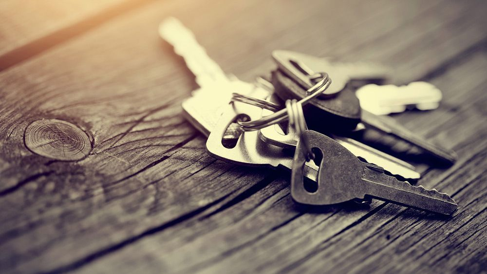
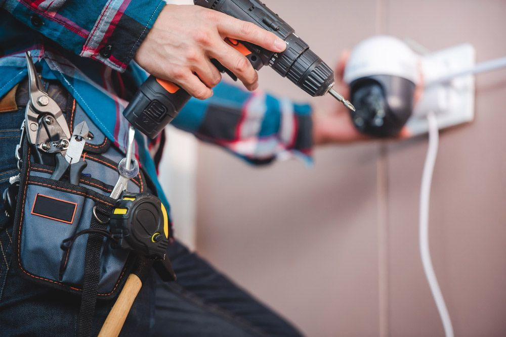
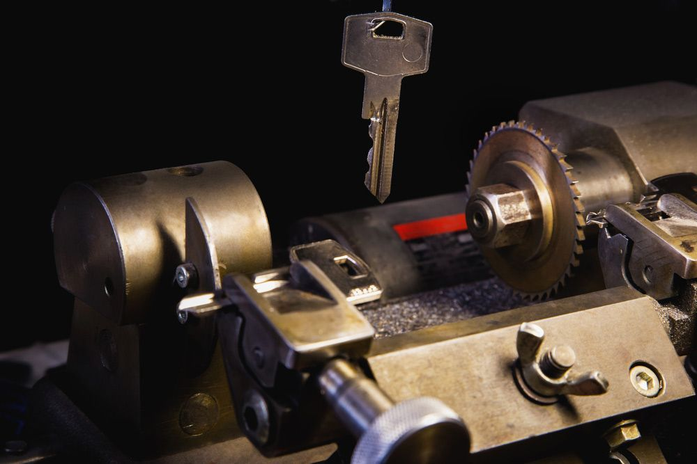

Get A Free Quote Now!
Thank you for contacting SPL Security Solutions.
We will be in touch soon.

Customised Access & Security Solutions
At SPL Security Solutions in Carrara, we understand the importance of maintaining the safety and security of your property. Our comprehensive range of locksmith services includes key cutting, master key systems, restricted key systems and high-security locks, tailored to meet individual needs. Whether you require a simple lock change or a more complex security solution, our team has the expertise and technology to provide unbeatable solutions.
Our professionals have years of experience in the industry and we are committed to providing reliable services to our clients. We work closely with you from consultation through to installation and maintenance.
For more information on our comprehensive range of locksmith services, call (07) 5588 8111.
Carrara homeowners can rest easy with our residential locksmith services, designed to keep their homes secure. Our team provides professional lock installation as well as timely repairs and rekeying. We also offer key duplication and emergency lockout services for those unexpected situations.
Our commercial locksmith services in Carrara provide businesses with reliable and effective security measures for their premises. We install high-quality locks, master key systems and access control solutions to monitor who enters different parts of your property. Our team also offers emergency assistance and comprehensive security assessments to ensure your premises has the right protection.
In the midst of a car key emergency? Our automotive locksmith services in Carrara offer efficient and reliable solutions for drivers who need assistance. Whether you're locked out, have lost your key or need a duplicate, our team can help. We also provide transponder key programming and ignition repair or replacement services with 24/7 emergency assistance for those urgent situations.
Our restricted key systems in Carrara provide an unrivalled level of security by ensuring keys cannot be duplicated without explicit authorisation from the system owner. This advanced security measure is essential for controlling access to various areas, significantly enhancing the protection of assets and sensitive locations.
Our safes in Carrara offer the ultimate protection against theft, fire and in some cases water damage. We provide a range of options suitable for personal and business needs, each carefully chosen for its security features—think reinforced walls, fire resistance and advanced locking mechanisms. Our services also include installation, maintenance and emergency unlocking for a seamless experience.
From controlling who enters your property to monitoring potential threats, our security systems in Carrara offer comprehensive protection for your home or business. Our solutions include CCTV cameras, alarm systems, access control and intercoms to provide 24/7 surveillance and monitoring capabilities. We can help you choose the most effective combination of products for optimal protection and ease of use.
Carrara properties can rely on our lock hardware, including deadlocks, keyless entry systems and high-security cylinder locks. These solutions deliver enhanced protection and peace of mind for your property.
Our door hardware in Carrara features weatherproof hinges, modern lever handles and high-performance closers. Each product is chosen to combine functionality with great design.
Our selection of architectural door hardware features fire-resistant options, seamless door closers, and stylish handles, complementing contemporary and classic design aesthetics in Carrara.
24/7 Emergency Locksmith Services
SPL Security Solutions is there for all your urgent lock-related needs in the Carrara area. Whether you're locked out of your home, car or business, our 24/7 emergency locksmith service offers a rapid response and professional solutions. Our team has years of experience dealing with various emergencies, providing peace of mind when you need it most.
If your property has been compromised by attempted or actual intrusion, our team can assess the damage to entry points and provide necessary repairs or replacements. Our mobile vans are equipped with the latest tools and technology, allowing us to provide on the spot lock replacements, rekeying and more.

Contact Details
24/7 Emergency Locksmiths or Security Tech


Trading Hours
Retail Shop

Frequently Asked Questions
-
How does a deadbolt lock enhance security?
Deadbolt locks provide an additional layer of security because they are heavier and more resistant to physical attacks than spring bolt locks. A deadbolt extends deeper into the door frame, making forced entry through methods like kicking or shoulder slamming much more difficult.
-
Can smart locks be opened without power or Wi-Fi?
Yes, most smart locks are equipped with a backup method to open the lock such as a physical key, a manual keypad or even a battery backup system, ensuring access even during power outages or Wi-Fi disruptions.
Locksmith & Security Solutions Gold Coast, Brisbane & Northern NSW